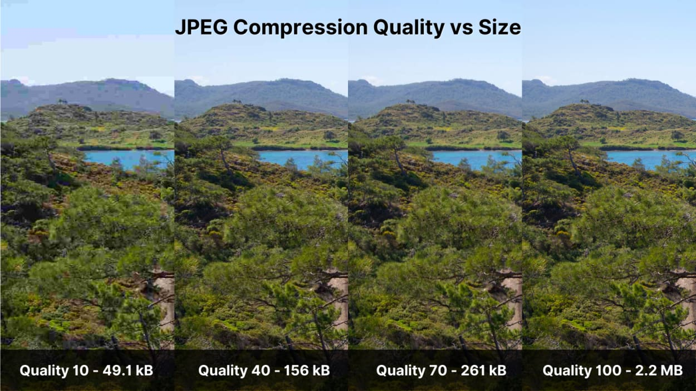

Compressie is het verkleinen van bestanden van bijvoorbeeld van afbeeldingen, video's en muziek.
Er zijn twee vormen van compressie namelijke lossles en lossy compressie.
Wat is lossy compressie?
Lossy compressie is het verkleinen van bestanden maar er gaat wel informatie verloren.
Waardoor de qaliteit achter uit gaat. bijvoorbeeld als je 30 verschillde tinten rood hebt
neemt dat veel ruimte in. Terwijl sommige tinten heel erg op elkaar lijken en soms niet eens
met het blote oog het verschil te zien.
Je telefoon gebruikt ook lossy compressie waar een afbeelding van JPEG naar een JPG.
Waardoor het bestand kleiner wordt.

Lossy compressie bij geluid
Compressie kan ook gedaan worden bij geluid. De bekentste compressietechniek is MP3.
MP3 is een vorm van lossy compressie. wat betekent dat er dus informatie verloren gaat.
Een menselijk oor kan tonen tot 20 kHz horen. MP3 haalt de tonen boven de 16 kHz weg.
Wat is lossles compressie?
Lossles compressie is het verkleinen van een bestand maar alle informatie blijft behouden.
Maar dan de vraag hoe wordt een bestand kleiner zonder dat je informatie verliest.
Dat wordt gedaan door de informatie effectiever op te slaan. bijvoorbeeld als er bij een afbeelding
zes keer achter elkaar de zelfde waarde hebben, bijvoorbeeld 255 die normaal gesproken als
(255,2552,225,255,255,255). Als je op dit voorbeeld lossles compression toepast is het (6,255).
Nog een groot verschil tussen lossles en lossy. Lossles compressie is terug omkeerbaar en lossy niet.
Omdat bij lossy compressie gaat er informatie verloren dus kan het niet terug naar het origineel.
Bitmap of vectoren wat is het verschil?
Een bitmap noemen we een afbeelding die is opgebouwt uit pixels. Een nadeel hier aan is dat pixels veer ruimte
inneemt en meerdere MB groot kan zijn. Een ander nadeel is dat als je inzoemt bij een bitmap je pixels zient
Waardoor je afbeelding niet meer scherp te zien is. zoals je kan zien in plaatje rechts